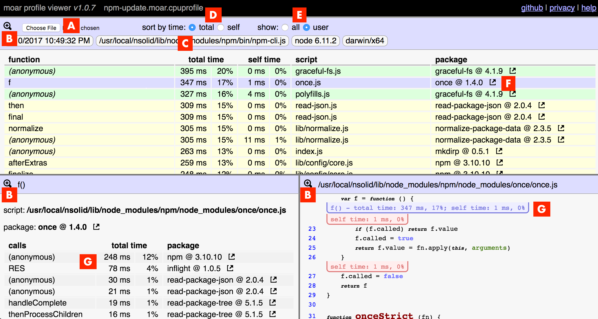

The moar profile viewer, available at https://moar-things.github.io/moar-profile-viewer , can be used to view v8 CPU profiles generated for Node.js applications.
For more information and background on CPU profiles, see the article Speed Up JavaScript Execution .
The following tools can be used to generate a v8 CPU profile for Node.js:
Most tools generate CPU profile files with a file extension of .cpuprofile . Once you have a CPU profile file, you can view it by visiting https://moar-things.github.io/moar-profile-viewer . You can either drag the file onto the web page, or load it from an input button on the page.
Below is the web page with a profile loaded.

The page is split into three panes:
The source code in the bottom right pane is annotated with blue and red lines and bubbles. The blue lines and bubbles indicate functions which are listed in the top pane. The red lines provide additional information about lines within a function.
To load a CPU profile from within this page, click the file upload button shown at A, which will prompt you for a file to load. Or you can drag and drop a file onto the web page.
You can "zoom" into a pane (hiding the other panes) by clicking the "zoom buttons" shown at B.
Information about your Node.js process is shown on the line at C. This information is only available with profiles generated with moar-profiler.
Functions in the top pane can be sorted by total time or self time, by clicking the respective buttons at D.
By default, only functions shown in "user" code is displayed. "User" code is code not shipped with the Node.js runtime; eg, the built-in modules fs, path, etc, are not "user" code. You can change to show all code, or back to just "user" code, by clicking the respective buttons at E.
The "link" image beside package names, shown at F, will open that package's page at npmjs.org, when clicked.
Where functions are shown in the bottom panes, they can be clicked to change the page to show information about that function. Examples are shown at G.